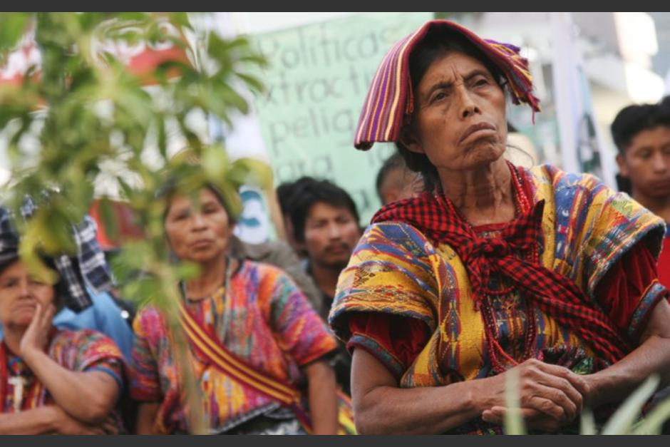

Población
Con una extensión territorial de 212 km2 , la población de la cabecera departamental de Chimaltenango para el año 2002, era de 74,077 habitantes distribuidos en hombres 36,652 que corresponde al 49% y mujeres 37,425 que equivale al 51%. La densidad poblacional es de 503 habitantes por kilometro cuadrado. (INE, 2002) Para el año 2009 según proyecciones del INE, la población total de la cabecera departamental de Chimaltenango es de 109,656 habitantes, siendo el 50.19% mujeres y 49.81% hombres. A continuación se muestra la población por sexo dentro del municipio
Chimaltenango muestra una mayoría de población de niños y jóvenes, siendo el 65.5% del total de la población menores de 24 años, lo que es un indicador de la capacidad de reemplazo del segmento de la Población Económicamente Activa –PEA. A la vez, la alta presencia de población joven en el municipio genera mayores demandas de servicios como salud, educación, empleo, recreación, etc.
La poblacion ladina de Chimaltenango es un 60% de su poblacion total el resto de la poblacion pertenece a los Indigenas.